Building a split keyboard with recycled switches
So, the other day doing dumpster diving I found an interesting piece of history, here are some crappy shots I took
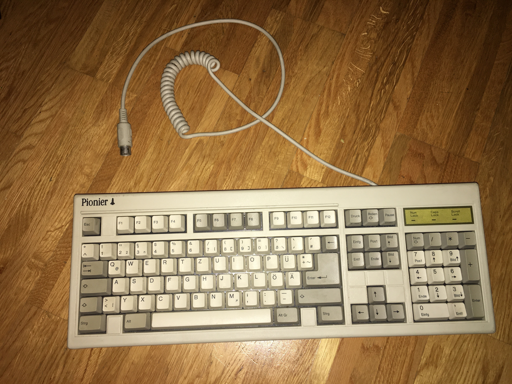
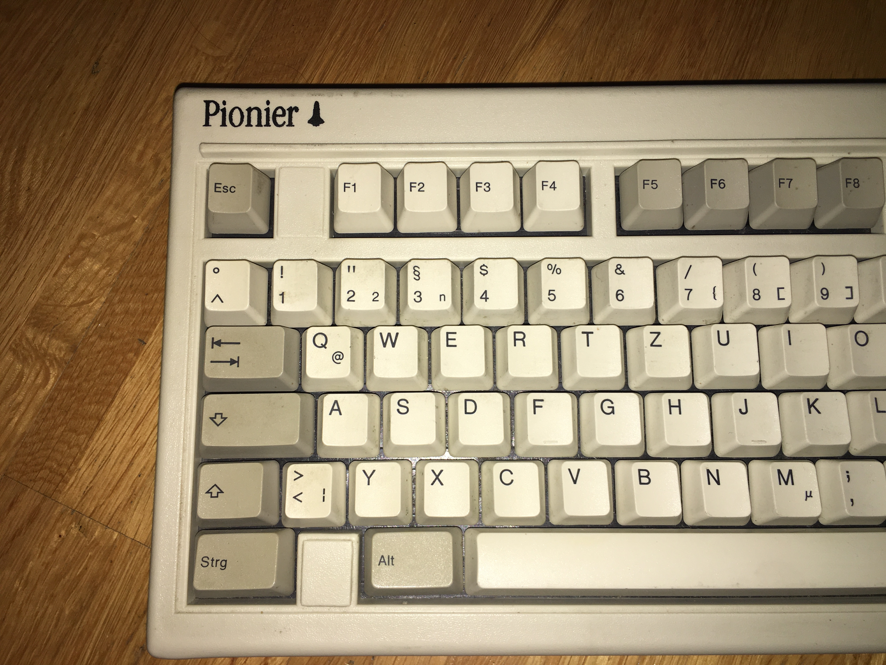
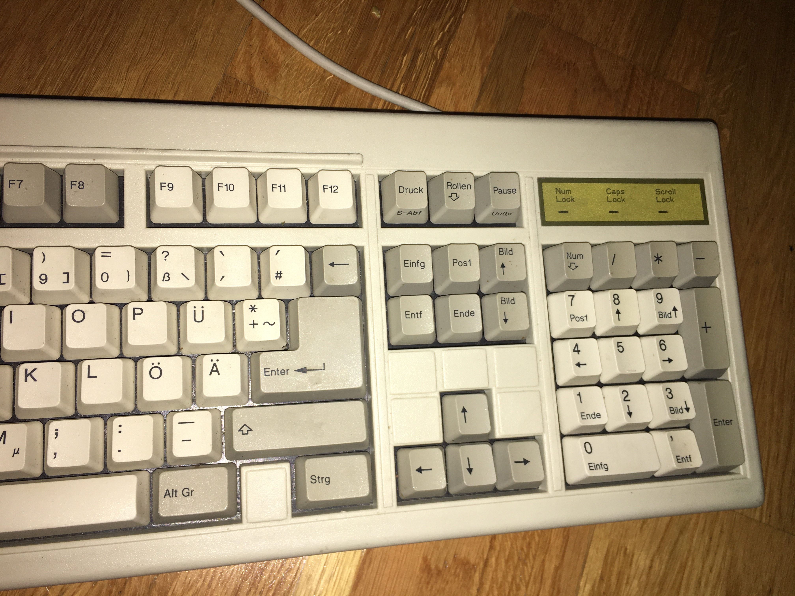
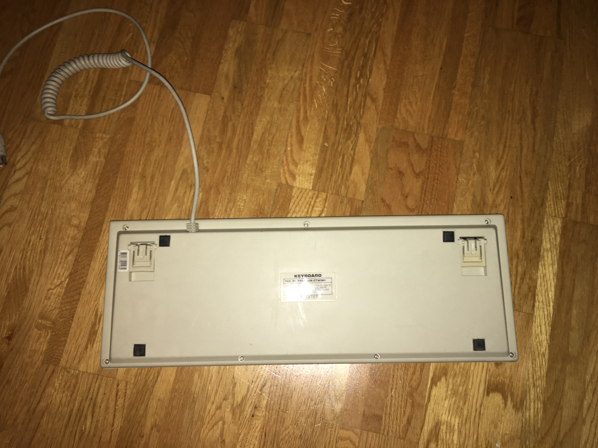
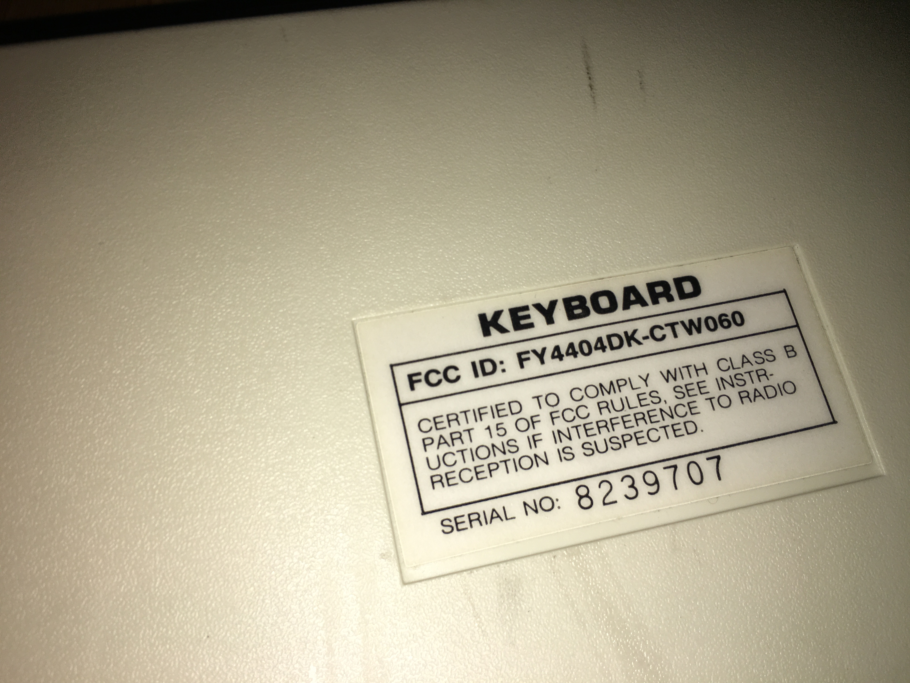
At first while in the dumpster I thought they switches
where some kind of KPT switches I saw once online, to my surprise
after desoldering the switches I found out they were actually
Tec switches and the only information I could find online was
in deskthority.
Here is a show of the bare board without the keycps
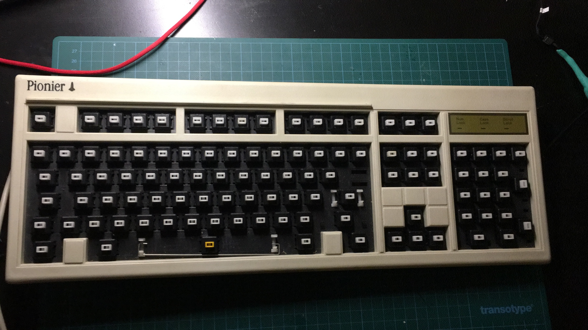
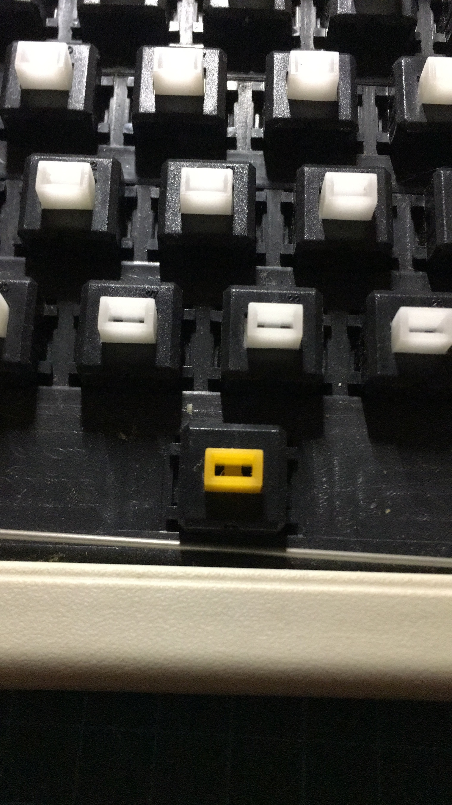
and to my delight the keycaps turned out to be double-shot, in very nice shape after a thorough clean-up
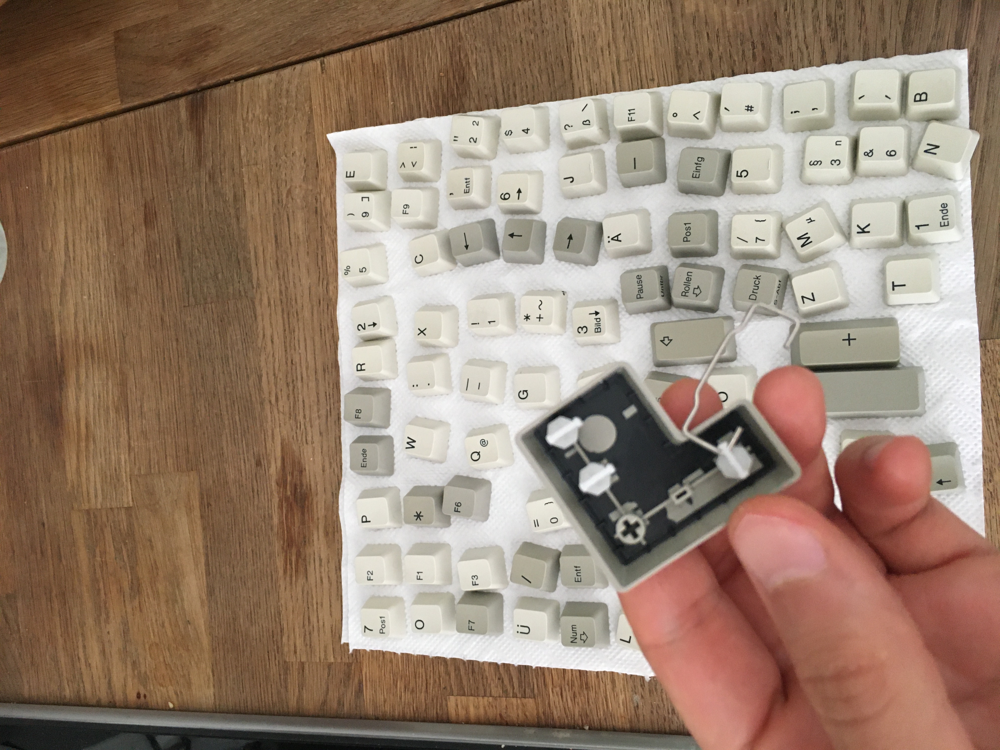
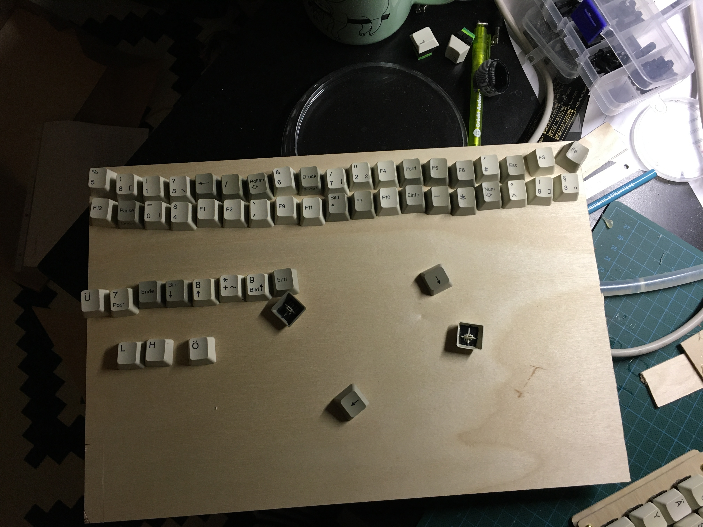
The switches are clicky and quite frankly not so good. I have to say while in the board they sounded better, but in the actual project they lost the hollow sound, but still. You can hear here how it sounded.
Anyways I wanted to build something with them, so I set out to build a quick atreus-like keyboard but in split-mode.
In the future I want to tweak the layouts so I wanted to have a simple a nice format for the coordinates of every key and no existing solutions quite fit my needs. I've been a fan of asymptote for many years but the language and the libraries haven't quite convinced me, so I wrote a haskell script to do this using the excellent diagrams library.
The result is in this repository. To do quickly a keyboard without many tools I just bought some thin wood sheets and created the first test for the layout:
In principle the idea is to drill holes where the three switch's legs are and glue the bottom of the switch to the wood (yes, I know is not the best way to go but well, at least I'm recycling).
Here I am punching holes into the wood to have a guide for the hand drill
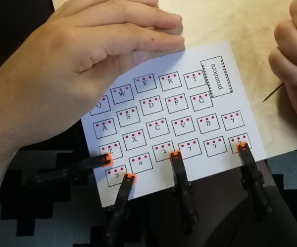
and after much work, this is what I got
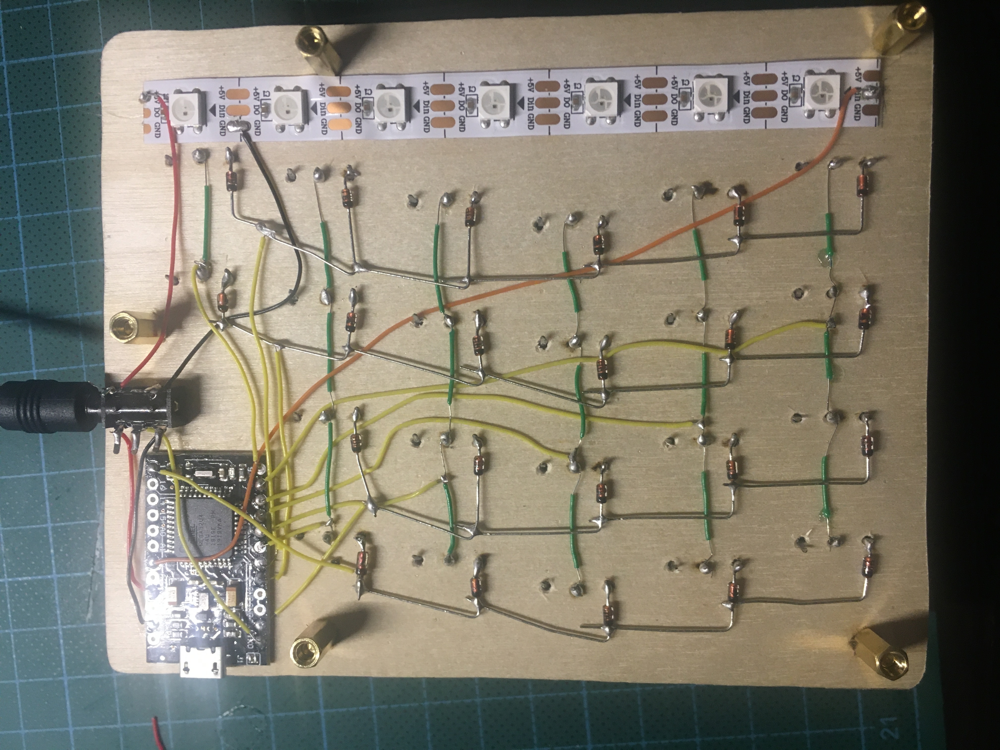
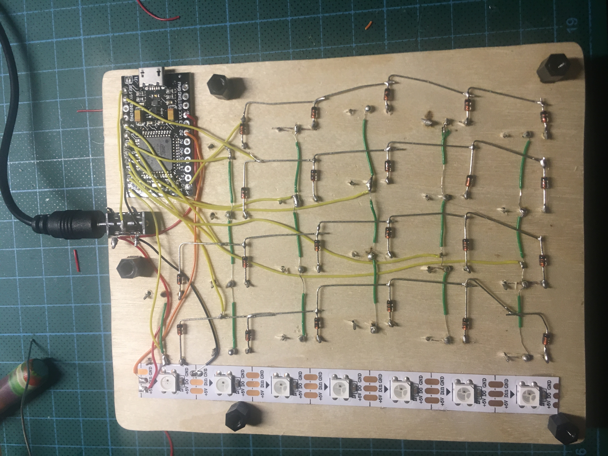
which in total ends up looking like this
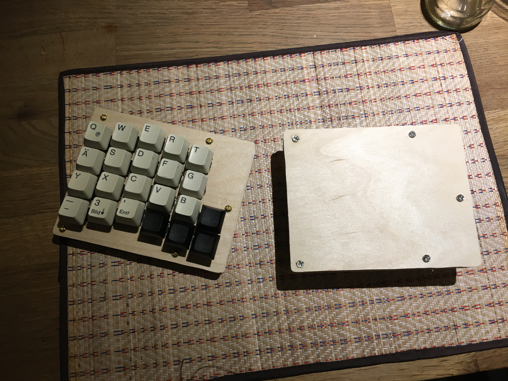
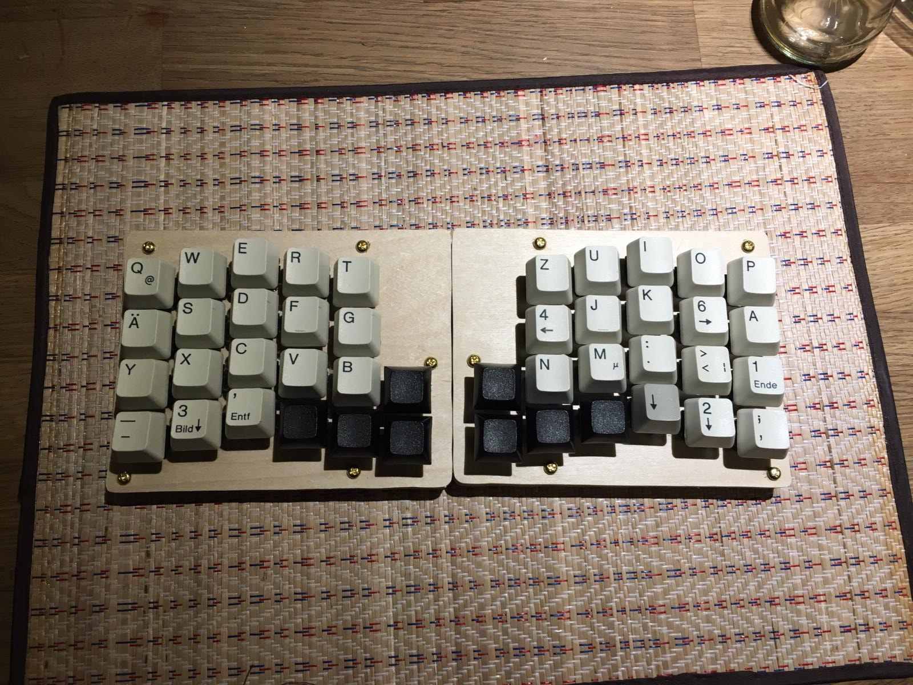
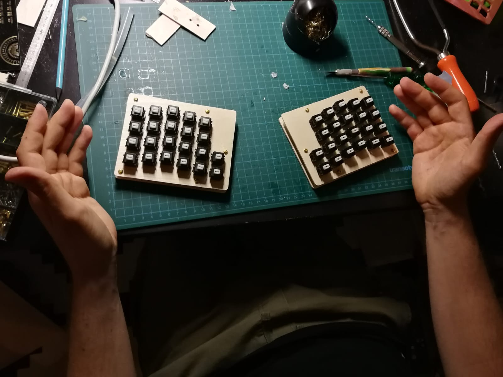